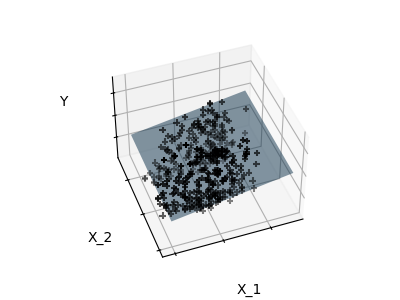
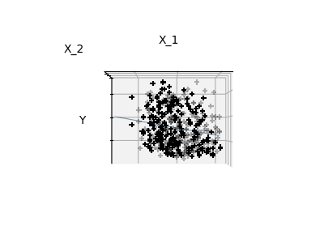
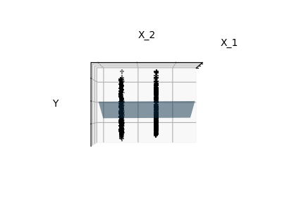

The problem solved in supervised learning
Supervised
learning consists in learning the link between two datasets: the
observed data X and an external variable y
that we are trying to predict, usually called “target” or “labels”. Most
often, y is a 1D array of length
n_samples.
All supervised estimators in
scikit-learn implement a fit(X, y) method to fit the model
and a predict(X) method that, given unlabeled observations
X, returns the predicted labels y.
Vocabulary: classification and regression
If the prediction task is to classify the observations in a set of finite labels, in other words to “name” the objects observed, the task is said to be a classification task. On the other hand, if the goal is to predict a continuous target variable, it is said to be a regression task.
When doing classification in scikit-learn, y is a vector
of integers or strings.
Note: See the Introduction to machine learning with scikit-learn Tutorial for a quick run-through on the basic machine learning vocabulary used within scikit-learn.
Classifying irises:
The iris dataset is a classification task consisting in identifying 3 different types of irises (Setosa, Versicolour, and Virginica) from their petal and sepal length and width:
>>> import numpy as np
>>> from sklearn import datasets
>>> iris_X, iris_y = datasets.load_iris(return_X_y=True)
>>> np.unique(iris_y)
array([0, 1, 2])The simplest possible classifier is the nearest
neighbor: given a new observation X_test, find in the
training set (i.e. the data used to train the estimator) the observation
with the closest feature vector. (Please see the Nearest
Neighbors section of the online Scikit-learn documentation for more
information about this type of classifier.)
Training set and testing set
While experimenting with any learning algorithm, it is important not to test the prediction of an estimator on the data used to fit the estimator as this would not be evaluating the performance of the estimator on new data. This is why datasets are often split into train and test data.
KNN (k nearest neighbors) classification example:
>>> # Split iris data in train and test data
>>> # A random permutation, to split the data randomly
>>> np.random.seed(0)
>>> indices = np.random.permutation(len(iris_X))
>>> iris_X_train = iris_X[indices[:-10]]
>>> iris_y_train = iris_y[indices[:-10]]
>>> iris_X_test = iris_X[indices[-10:]]
>>> iris_y_test = iris_y[indices[-10:]]
>>> # Create and fit a nearest-neighbor classifier
>>> from sklearn.neighbors import KNeighborsClassifier
>>> knn = KNeighborsClassifier()
>>> knn.fit(iris_X_train, iris_y_train)
KNeighborsClassifier()
>>> knn.predict(iris_X_test)
array([1, 2, 1, 0, 0, 0, 2, 1, 2, 0])
>>> iris_y_test
array([1, 1, 1, 0, 0, 0, 2, 1, 2, 0])For an estimator to be effective, you need the distance between neighboring points to be less than some value
, which depends on the problem. In one dimension, this requires on average points. In the context of the above -NN example, if the data is described by just one feature with values ranging from 0 to 1 and with training observations, then new data will be no further away than . Therefore, the nearest neighbor decision rule will be efficient as soon as
is small compared to the scale of between-class feature variations.
If the number of features is
, you now require points. Let’s say that we require 10 points in one dimension: now points are required in dimensions to pave the space. As
becomes large, the number of training points required for a good estimator grows exponentially.
For example, if each point is just a single number (8 bytes), then an effective
-NN estimator in a paltry
dimensions would require more training data than the current estimated size of the entire internet (±1000 Exabytes or so).
This is called the curse of dimensionality and is a core problem that machine learning addresses.
Diabetes dataset
The diabetes dataset consists of 10 physiological variables (age, sex, weight, blood pressure) measured on 442 patients, and an indication of disease progression after one year:
>>> diabetes_X, diabetes_y = datasets.load_diabetes(return_X_y=True)
>>> diabetes_X_train = diabetes_X[:-20]
>>> diabetes_X_test = diabetes_X[-20:]
>>> diabetes_y_train = diabetes_y[:-20]
>>> diabetes_y_test = diabetes_y[-20:]The task at hand is to predict disease progression from physiological variables.
LinearRegression,
in its simplest form, fits a linear model to the data set by adjusting a
set of parameters in order to make the sum of the squared residuals of
the model as small as possible.
data
target variable
Coefficients
>>> from sklearn import linear_model
>>> regr = linear_model.LinearRegression()
>>> regr.fit(diabetes_X_train, diabetes_y_train)
LinearRegression()
>>> print(regr.coef_)
[ 0.30349955 -237.63931533 510.53060544 327.73698041 -814.13170937
492.81458798 102.84845219 184.60648906 743.51961675 76.09517222]
>>> # The mean square error
>>> np.mean((regr.predict(diabetes_X_test) - diabetes_y_test)**2)
2004.5...
>>> # Explained variance score: 1 is perfect prediction
>>> # and 0 means that there is no linear relationship
>>> # between X and y.
>>> regr.score(diabetes_X_test, diabetes_y_test)
0.585...If there are few data points per dimension, noise in the observations induces high variance:
>>> X = np.c_[ .5, 1].T
>>> y = [.5, 1]
>>> test = np.c_[ 0, 2].T
>>> regr = linear_model.LinearRegression()
>>> import matplotlib.pyplot as plt
>>> plt.figure()
<...>
>>> np.random.seed(0)
>>> for _ in range(6):
... this_X = .1 * np.random.normal(size=(2, 1)) + X
... regr.fit(this_X, y)
... plt.plot(test, regr.predict(test))
... plt.scatter(this_X, y, s=3)
LinearRegression...A solution in high-dimensional statistical learning is to
shrink the regression coefficients to zero: any two randomly
chosen set of observations are likely to be uncorrelated. This is called
Ridge
regression:
>>> regr = linear_model.Ridge(alpha=.1)
>>> plt.figure()
<...>
>>> np.random.seed(0)
>>> for _ in range(6):
... this_X = .1 * np.random.normal(size=(2, 1)) + X
... regr.fit(this_X, y)
... plt.plot(test, regr.predict(test))
... plt.scatter(this_X, y, s=3)
Ridge...This is an example of bias/variance tradeoff: the
larger the ridge alpha parameter, the higher the bias and
the lower the variance.
We can choose alpha to minimize left out error, this
time using the diabetes dataset rather than our synthetic data:
>>> alphas = np.logspace(-4, -1, 6)
>>> print([regr.set_params(alpha=alpha)
... .fit(diabetes_X_train, diabetes_y_train)
... .score(diabetes_X_test, diabetes_y_test)
... for alpha in alphas])
[0.585..., 0.585..., 0.5854..., 0.5855..., 0.583..., 0.570...]Note
Capturing in the fitted parameters noise that prevents the model to generalize to new data is called overfitting. The bias introduced by the ridge regression is called a regularization.
Fitting only features 1 and 2
  
Note
A representation of the full diabetes dataset would involve 11 dimensions (10 feature dimensions and one of the target variable). It is hard to develop an intuition on such representation, but it may be useful to keep in mind that it would be a fairly empty space.
We can see that, although feature 2 has a strong coefficient on the
full model, it conveys little information on y when
considered with feature 1.
To improve the conditioning of the problem (i.e. mitigating the The curse of dimensionality), it would be interesting to select only the informative features and set non-informative ones, like feature 2 to 0. Ridge regression will decrease their contribution, but not set them to zero. Another penalization approach, called Lasso (least absolute shrinkage and selection operator), can set some coefficients to zero. Such methods are called sparse methods and sparsity can be seen as an application of Occam’s razor: prefer simpler models.
>>> regr = linear_model.Lasso()
>>> scores = [regr.set_params(alpha=alpha)
... .fit(diabetes_X_train, diabetes_y_train)
... .score(diabetes_X_test, diabetes_y_test)
... for alpha in alphas]
>>> best_alpha = alphas[scores.index(max(scores))]
>>> regr.alpha = best_alpha
>>> regr.fit(diabetes_X_train, diabetes_y_train)
Lasso(alpha=0.025118864315095794)
>>> print(regr.coef_)
[ 0. -212.4... 517.2... 313.7... -160.8...
-0. -187.1... 69.3... 508.6... 71.8... ]Different algorithms for the same problem
Different algorithms can be used to solve the same mathematical
problem. For instance the Lasso object in scikit-learn
solves the lasso regression problem using a coordinate
descent method, that is efficient on large datasets. However,
scikit-learn also provides the LassoLars
object using the LARS algorithm, which is very efficient for
problems in which the weight vector estimated is very sparse
(i.e. problems with very few observations).
For classification, as in the labeling iris task, linear regression is not the right approach as it will give too much weight to data far from the decision frontier. A linear approach is to fit a sigmoid function or logistic function:

>>> log = linear_model.LogisticRegression(C=1e5)
>>> log.fit(iris_X_train, iris_y_train)
LogisticRegression(C=100000.0)This is known as LogisticRegression.
Multiclass classification
If you have several classes to predict, an option often used is to fit one-versus-all classifiers and then use a voting heuristic for the final decision.
Shrinkage and sparsity with logistic regression
The C parameter controls the amount of regularization in
the LogisticRegression
object: a large value for C results in less regularization.
penalty="l2" gives Shrinkage
(i.e. non-sparse coefficients), while penalty="l1" gives Sparsity.
Exercise
Try classifying the digits dataset with nearest neighbors and a linear model. Leave out the last 10% and test prediction performance on these observations.
from sklearn import datasets, linear_model, neighbors
X_digits, y_digits = datasets.load_digits(return_X_y=True)
X_digits = X_digits / X_digits.max()A solution can be downloaded here.
Support
Vector Machines belong to the discriminant model family: they try to
find a combination of samples to build a plane maximizing the margin
between the two classes. Regularization is set by the C
parameter: a small value for C means the margin is
calculated using many or all of the observations around the separating
line (more regularization); a large value for C means the
margin is calculated on observations close to the separating line (less
regularization).

Unregularized SVM
Regularized SVM (default)
Example:
SVMs can be used in regression –SVR
(Support Vector Regression)–, or in classification –SVC
(Support Vector Classification).
>>> from sklearn import svm
>>> svc = svm.SVC(kernel='linear')
>>> svc.fit(iris_X_train, iris_y_train)
SVC(kernel='linear')Warning
Normalizing data
For many estimators, including the SVMs, having datasets with unit standard deviation for each feature is important to get good prediction.
Classes are not always linearly separable in feature space. The solution is to build a decision function that is not linear but may be polynomial instead. This is done using the kernel trick that can be seen as creating a decision energy by positioning kernels on observations:
>>> svc = svm.SVC(kernel='linear')>>> svc = svm.SVC(kernel='poly',
... degree=3)
>>> # degree: polynomial degree
>>> svc = svm.SVC(kernel='rbf')
>>> # gamma: inverse of size of
>>> # radial kernel
>>> svc = svm.SVC(kernel='sigmoid')Interactive example
See the SVM
GUI to download svm_gui.py; add data points of both
classes with right and left button, fit the model and change parameters
and data.
Exercise
Try classifying classes 1 and 2 from the iris dataset with SVMs, with the 2 first features. Leave out 10% of each class and test prediction performance on these observations.
Warning: the classes are ordered, do not leave out the last 10%, you would be testing on only one class.
Hint: You can use the decision_function
method on a grid to get intuitions.
iris = datasets.load_iris()
X = iris.data
y = iris.target
X = X[y != 0, :2]
y = y[y != 0]A solution can be downloaded here
Since this tutorial was originally written for scikit-learn 1.4, several enhancements have been made to supervised learning capabilities:
scikit-learn 1.7 now supports Array API-compliant inputs, making it easier to work with data from libraries like PyTorch and CuPy directly in supervised learning tasks:
>>> import torch
>>> from sklearn.linear_model import LinearRegression
>>> from sklearn.svm import SVC
>>>
>>> # Works with PyTorch tensors
>>> X = torch.tensor([[1, 2], [3, 4], [5, 6]])
>>> y = torch.tensor([3, 7, 11])
>>> reg = LinearRegression()
>>> reg.fit(X, y) # Seamless integration with PyTorch
>>>
>>> # Also works with classification
>>> X_clf = torch.tensor([[1, 2], [2, 3], [3, 4], [4, 5]])
>>> y_clf = torch.tensor([0, 0, 1, 1])
>>> clf = SVC()
>>> clf.fit(X_clf, y_clf)All supervised learning estimators now support both traditional
sparse matrices (scipy.sparse.spmatrix) and the newer
sparse arrays (scipy.sparse.sparray):
>>> from scipy.sparse import csr_array
>>> from sklearn.linear_model import LogisticRegression
>>> from sklearn.svm import SVC
>>>
>>> X_sparse = csr_array([[0, 1, 0], [1, 0, 1], [0, 1, 1]])
>>> y = [0, 1, 1]
>>>
>>> # Works with both sparse formats
>>> log_reg = LogisticRegression()
>>> log_reg.fit(X_sparse, y)
>>>
>>> svm_clf = SVC()
>>> svm_clf.fit(X_sparse, y)HistGradientBoostingClassifier and
HistGradientBoostingRegressor now support explicit
validation sets for better early stopping and overfitting control:
>>> from sklearn.ensemble import HistGradientBoostingClassifier
>>> from sklearn.model_selection import train_test_split
>>>
>>> X_train, X_val, y_train, y_val = train_test_split(X, y, test_size=0.2)
>>> clf = HistGradientBoostingClassifier(enable_metadata_routing=True)
>>> clf.fit(X_train, y_train, X_val=X_val, y_val=y_val)The Multilayer Perceptron now supports Poisson loss (useful for count data) and sample weights, enhancing its flexibility for various supervised learning applications:
>>> from sklearn.neural_network import MLPRegressor
>>>
>>> # Poisson loss for count data
>>> mlp_poisson = MLPRegressor(loss='poisson')
>>> mlp_poisson.fit(X_train, y_train)
>>>
>>> # Sample weights support
>>> sample_weights = np.array([1.0, 2.0, 1.5, 0.8])
>>> mlp_weighted = MLPRegressor()
>>> mlp_weighted.fit(X_train, y_train, sample_weight=sample_weights)These enhancements maintain full backward compatibility while providing more flexibility and power for supervised learning tasks.
This original version of this tutorial was written by scikit-learn developers under the BSD License.
The code examples and text were updated for scikit-learn version 1.7 by Brian Bird using Claude Sonet 4, 10/19/2025